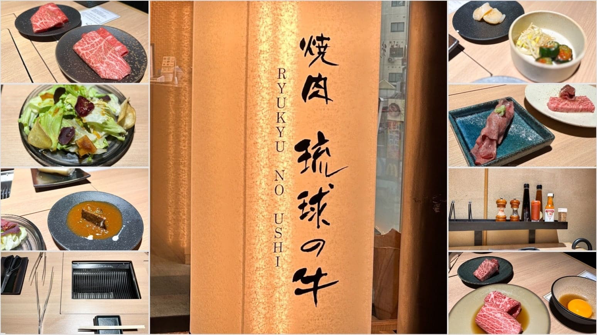
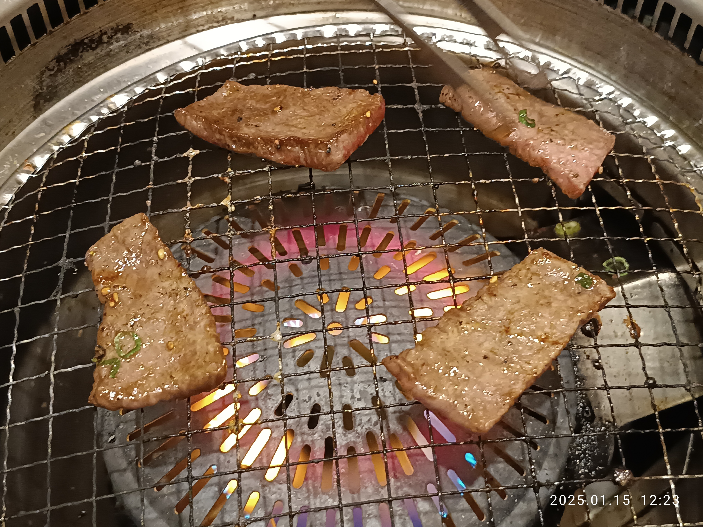
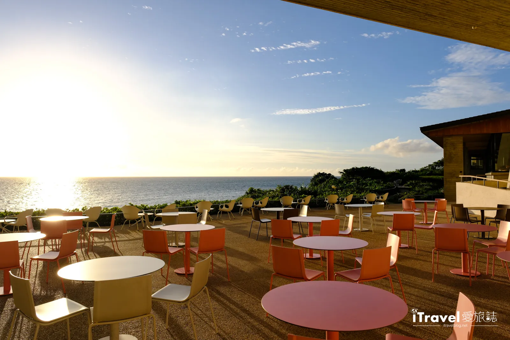

燒肉 琉球之牛
藏身於國際通的高級燒肉名店，嚴選沖繩縣產和牛，特製晚餐套餐油花均勻，在炭火上滋滋作響。適合情侶約會或慶祝特殊紀念日。

燒肉本部牧場
距離美ら海水族館僅五分鐘車程，自家牧場培育的品牌牛「もとぶ牛」，以發酵飼料餵養，中午時段 CP 值最高，全年無公休。

花人逢
本部町山間景觀咖啡廳，由古民家改裝，窗外是令人屏息的翡翠綠海岸線，義式窯烤手工披薩用料實在，是 IG 打卡熱點。

浜辺の茶屋
南城市玉城海岸懸崖上的元祖海景咖啡廳，數十年穩坐熱搜榜，太平洋浩渺盡收眼底，窗外座位可聽潮與海風。

風林火山
清晨七點開門的日式早餐專門店，使用阿古豬、嚴選日本米與秘製柴魚昆布高湯，昭和風情的低調沉穩氛圍。

Banta Cafe
讀谷村懸崖上的日本最大規模海景咖啡廳之一，四個特色主題區，無時間限制用餐，夕陽時分金橙色光線將大海染成琥珀色。